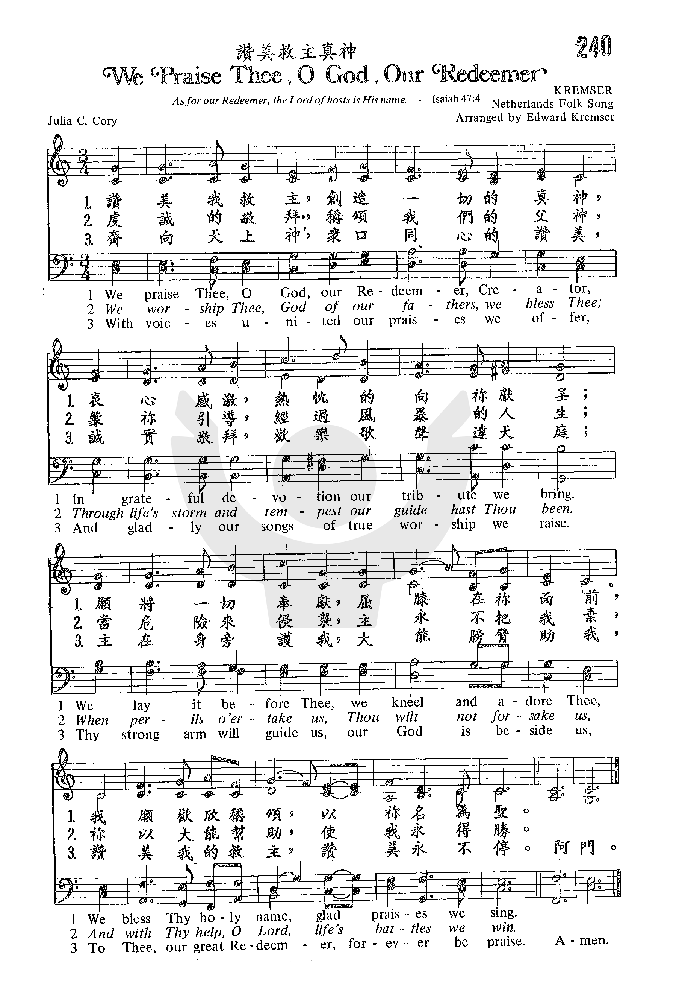

1271
We Praise Ye O God Our Redeemer _Julia
C. Cory
赞美救主真神
|
|
|
|
240 We Praise Ye O God Our Redeemer
Lyrics:
1. We praise you, O God, our Redeemer, Creator;
In grateful devotion our tribute we bring.
We lay it before you, we kneel and adore you;
We bless your holy name, glad praises we sing.
2. We worship you, God of our fathers, we bless you;
Through trial and tempest our guide you have been.
When perils over take us, you will not forsake us,
And with your help, O Lord, our struggles we win.
3. With voices united our praises we offer
And gladly our songs of thanksgiving we raise.
With you, Lord, beside us, your strong arm will guide us.
To you, our great Redeemer, forever be praise! |
240 讚美救主真神
讚美我救主，創造一切的真神，
衷心感激，熱忱的向祢獻呈；
願將一切奉獻，屈膝在你面前，
我願歡欣稱頌，以祢名為聖。
虔誠的敬拜，稱頌我們的父神，
蒙祢引導，經過風暴的人生；
當危險來侵襲，主永不把我棄，
祢以大能幫助，使我永得勝。
齊向天上神，眾口同心的讚美，
誠實敬拜，歡樂歌聲達天庭；
主在身旁護我，大能膀臂助我，
讚美我的救主，讚美永不停。
|
|
https://www.zanmeishige.com/tab/25598.html?songbook=1&index=240

|
|
|
|
1271
We Praise Ye O God Our Redeemer 赞美救主真神
|
Short Name: |
Julia C. Cory |
|
Full Name: |
Cory, Julia C., 1882-1963 |
|
Birth Year: |
1882 |
|
Death Year: |
1963 |
Julia C. Cory (Julia
Buckley Cady Cory)
was born in New York, NY
in 1882. She was the daughter of a prominent New York architect, J.
Cleveland Cady. Her father was also a Sunday school superintendent and
amateur hymnologist. Partly because of his influence Julia began to write
hymns at an early age. She was a member of the Brick Presbyterian Church.
She married Robert Haskell Cory in 1911 and was a member of the Presbyterian
Church in Englewood, NJ for all of her married life. She was a member of the
Hymn Society that met in New York City all her adult life and died in
Englewood, NJ in 1963. She raised 3 sons and they had 15 grandchildren.
Psalter Hymnal
Handbook, 1998 and D. Lincoln Cory
Tune Information
|
Title: |
KREMSER |
|
Arranger: |
Eduard Kremser (1877) |
|
Place Of
Origin: |
Netherlands |
|
Meter: |
12.11.12.11 |
|
Incipit: |
55653 45432 31556 |
|
Key: |
B♭
Major/C Major/D Major |
|
Source: |
Netherlands melody in A Valerius's Collection (1626) |
|
Copyright: |
Public Domain |
Notes
The tune KREMSER

owes its origin
to a sixteenth-century Dutch folk song "Ey, wilder den wilt." Later the
tune was combined with the Dutch patriotic hymn 'Wilt heden nu treden"
in Adrianus Valerius's Nederlandtsch Gedenckclanck [sic:
Nederlandtsche Gedenckclank] published posthumously in 1626. 'Wilt heden
nu treden," which celebrated Dutch freedom from Spanish rule, was always
popular in the Netherlands, but gained international popularity through
an arrangement by Eduard Kremser in his Sechs
Altniederlandische Volkslieder (1877) for men's
voices. This collection of six songs in German translation from
Valerius's anthology was the source of the older English text, 'We
Gather Together." Keep a firm but stately tempo with strong, solid organ
registration.
--Psalter Hymnal
Handbook, 1998
Notes
The tune KREMSER owes
its origin to a sixteenth-century Dutch folk song "Ey, wilder den wilt."
Later the tune was combined with the Dutch patriotic hymn 'Wilt heden nu
treden" in Adrianus Valerius's Nederlandtsch
Gedenckclanck [sic: Nederlandtsche Gedenckclank]
published posthumously in 1626. 'Wilt heden nu treden," which celebrated
Dutch freedom from Spanish rule, was always popular in the Netherlands,
but gained international popularity through an arrangement by Eduard
Kremser in his Sechs Altniederlandische Volkslieder (1877)
for men's voices. This collection of six songs in German translation
from Valerius's anthology was the source of the older English text, 'We
Gather Together." Keep a firm but stately tempo with strong, solid organ
registration.
--Psalter Hymnal
Handbook, 1998
INTRO.:
A hymn which gives praise to our Redeemer whose name is the Lord of Hosts is “We
Praise Thee, O God, Our Redeemer.” The text was written by Julia Bulkley
Cady Cory, who was born on Nov. 9, 1882, at New York City, NY, the daughter of
architect J. Cleveland Cady. Julia attended Brearley School and
Reynolds School, both in New York, and her family belonged to the Brick
Presbyterian Church in New York City. Due to the popularity of the
1626 hymn “We Gather Together” sometimes attributed to Adrianus Valerius, with
the words translated by Theodore Baker and the music arranged by Edward Kremser,
in 1902, often sung at Thanksgiving services, J. Archer Gibson, who was the
music director at the Brick Presbyterian Church, requested of Julia some new
lyrics for the tune which is used with that song. After struggling for two
weeks, Julia, who was not long out of school, produced three stanzas. The
first public performance of her hymn was the next Thanksgiving Day.
A month later, the author’s father wished to use the hymn for a service on Dec.
25 at the Church of the Covenant, also in New York City, so he asked his
daughter to add a fourth stanza. The song first appeared in Hymns
of the Living Church in 1910. In 1911, Miss Cady married
businessman Robert Haskell Cory. She was active in many church activities, and
did much for her community. For most of her adult life she was a member of
the New York City Hymn Society. She lived with her husband and their
family at Englewood, NJ, spending their summers in Weld, ME, and she died on May
1, 1963, at Englewood. Some older books erroneously say that the
hymn "We Praise Thee, O God, Our Redeemer, Creator" was written by an unknown
author and translated by Julia B. Cady Cory, but William J. Reynolds notes that
while this hymn was written as a substitute for "We Gather Together" it is not
another translation or version of the original.
Some more recent books have tried to “update” the language and begin the song,
“We Praise You, O God, Our Redeemer.” I have to ask, why? Among
hymnbooks published by members of the Lord’s church during the twentieth century
for use in churches of Christ, "We Praise Thee, O God, Our Redeemer" with the
first three stanzas only using the traditional Dutch tune, is found in the 1986 Great
Songs Revised edited by Forrest M. McCann, and the 1992 Praise
for the Lord edited by John P. Wiegand, as well as the 2007 Sumphonia
Hymn Supplement edited by Steve Wolfgang and others. It
was used in the original edition of Shepard and Stevens’ Hymns
for Worship but omitted from the revised edition. I
really like “We Gather Together.” However, I also like “We Praise Thee, O
God, Our Redeemer.” It is my opinion that every good hymn deserves a tune
of its own, rather than just being sung to “some other hymn’s tune,” so I looked
around to find another tune for the latter. Not locating one, I provided
one of my own (Affton). Because of the rather odd meter of the two songs
and their obvious similarity, my tune is of necessity also somewhat similar to
the one for “We Gather Together,” especially in its movement.
The song expresses praise to God for several different reasons
I. Stanza 1 praises Him as our Creator
"We praise Thee, O God, Our Redeemer, Creator,
In grateful devotion our tribute we bring.
We lay it before Thee, we kneel and adore Thee,
We bless Thy holy name, glad praises we sing."
A. God is the one who created the heavens and the earth, as well as man: Gen.
1:1, 27
B. Therefore, we should kneel before Him: Ps. 95:6
C. The word “bless” here simply means to praise or give glory to: Ps. 103:1-2
II. Stanza 2 praises Him as the God of our fathers
"We worship Thee, God of our Fathers, we bless Thee;
Through life’s storm and tempest our guide hast Thou been.
When perils o’er-take us, Thou wilt not forsake us,
And with Thy help, O Lord, life’s battle’s we win."
A. Throughout the Bible Jehovah is called “the God of our fathers”: Deut. 26:7
B. He has promised that He will never forsake us: Heb. 13:5
C. With His help, we can be victors in life’s battles: Rom. 8:37
III. Stanza 3 praises Him as our guide
"With voices united our praises we offer,
And gladly our songs of true worship we raise.
Thy strong arm will guide us, our God is beside us,
To Thee, our great Redeemer, ever be praise."
A. Not only can we praise God individually, but we can also unite our voices in
song: Col. 3:17
B. The singing of songs is a part of true worship to God: Jn. 4:24
C. One reason we sing songs of praise to Him is because His strong arm will
guide us: Ps. 89:13
IV. Stanza 4 praises Him as our Savior
"Thy love Thou didst show us, Thine only Son sending,
Who came as a babe and whose bed was a stall,
His blest life He gave us and then died to save us;
We praise Thee, O Lord, for Thy gift to us all."
A. God so loved the world that He gave His only Son: Jn. 3:16
B. He came as a babe whose bed was a manger stall: Lk. 2:1-6
C. Then He died to save us: Rom. 5:8-9
CONCL.:
There are many different kinds of “psalms and hymns and spiritual songs” to sing
in worship by which we can teach and admonish one another. I would not for
a minute seek to eliminate the devotional songs which encourage us to commune
with our Father in prayer, or the hopeful songs which focus our minds on heaven,
or the didactic songs which exhort us in our lives as Christians. However,
we should never forget that we also need to sing hymns of glory and honor in
which we tell our Maker, “We Praise Thee, O God, Our Redeemer.”
https://hymnstudiesblog.wordpress.com/2010/05/10/quotwe-praise-thee-o-god-our-redeemerquot/
Words: Julia Bulkley Cady Cory (b. Nov. 9, 1882;
d. May 1, 1963)
Music: Kremser,
by Eduard Kremser (b. Apr. 10, 1838; d. Nov. 27, 1914)
Links:
Wordwise Hymns
The Cyber Hymnal
Hymnary.org
Note: A little about Julia Cory is found in the Wordwise link, as well
as the account of how she came to add a Christmas stanza to this hymn,
later. It alludes to the truth of John 3:16, stating that God sent His
Son in love for us, and Christ died to saved us. The stanza says:
Thy love Thou didst show us, Thine only Son sending,
Who came as a babe and whose bed was a stall,
His blest life He gave us and then died to save us;
We praise Thee, O Lord, for Thy gift to us all.
The hymn is certainly not exceptional poetry, but it does fit the tune,
for which it was written at the request of Arthur Gibson, the organist
at Mrs. Cory’s church. Some have supposed it was another English
translation of the Dutch Thanksgiving hymn We
Gather Together, but that is not the case. It’s a completely
different song, created to be used with the tune of the latter hymn.
This simple hymn can be analyzed in terms of eight activities of
the saints (chiefly praise and thanksgiving), and eight activities of
the Saviour–though some of them may well overlap.
CH-1) We praise Thee, O God, our Redeemer, Creator,
In grateful devotion our tribute we bring;
We lay it before Thee, we kneel and adore Thee,
We bless Thy holy name, glad praises we sing.
Activities of the Saints:
1) Praise (CH-1), and eternal praise–“to Thee…forever be praise”
(CH-3, cf. Rev. 19:5-6)
2) “Grateful devotion” (CH-1), or wholehearted thanksgiving
3) Bringing tributes to the Lord (CH-1), presumably our offerings,
but perhaps covering time and talents, as well as treasures (cf.
Matt. 2:11)
4) Kneeling (CH-1) which recognizes the sovereign majesty of God,
and expresses submission to Him (cf. Ps. 95:6)
5) Adoration (CH-1) which the dictionary defines as “deep love or
esteem”
6) Worship (CH-1) an expression of the worth-ship of God
7) United (CH-3), which would suggest the activity of a group
8) Singing (“anthems”) (CH-3), praising God in song (Ps. 9:2)
CH-2) We worship Thee, God of our fathers, we bless Thee;
Through life’s storm and tempest our Guide hast Thou been;
When perils o’ertake us, escape Thou will make us,
And with Thy help, O Lord, our battles we win.
Activities of the Saviour:
1) He is the Redeemer (CH-1). “I know that my Redeemer lives” (Job
19:25)
2) He is the Creator of all (CH-1)
3) He is the “God of our fathers” (CH-2), suggesting His
faithfulness in the past. “Our fathers trusted in You; they trusted,
and You delivered them” (Ps. 22:4; cf. Acts 13:32-33)
4) He is our Guide through the storms of life (CH-2)
5) He is our Deliverer, enabling us to “escape” temptation (CH-2,
cf. I Cor. 10:13)
6) He is our Defender in the “battles” with the evil one (CH-2)
7) He is our great Jehovah (CH-3). Jehovah or Yahweh (usually
rendered “LORD” in capital letters, in the King
James Version) connotes a number of things: that He is
self-existent, that He is the Redeemer of man, and that He is the
covenant-making, covenant-keeping God (cf. Jer. 31:31-32).
8) He is the ever Present One (CH-3)–“our God is beside us” (Matt.
28:20).
CH-3) With voices united our praises we offer,
To Thee, great Jehovah, glad anthems we raise.
Thy strong arm will guide us, our God is beside us,
To Thee, our great Redeemer, forever be praise.
Questions:
1) Which of the above activities of the saints have you specifically
engaged in this week?
2) Which of the above activities of the Saviour has been especially
meaningful to you this week?
Links:
Wordwise Hymns
The Cyber Hymnal
Hymnary.org